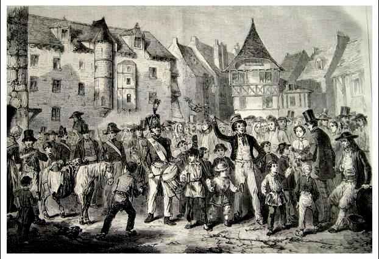

|
EGINANE SANT TRIFIN In nom'ne Patris et Filii Doue da venigo an ti. Eginane! Eginane! ou bien Eginane! 'baoe warlene! Bennigo an ti hag ar c'hraoù Hag an ed a zo er parkoù. Hemañ zo un ti bras hag uhel Rag a vez gwelet euz-a bell. C'hoazh ve gwelet a belloc'h-bro Panevet ar c'hoad tro-war-dro. Hemañ a zo ti un o(zha)c'h mat Med e bried hen tal(voud) ervat. Med e bried hen tal(voud) ervat. Kenkoulz er ger 'vel er marc'had. Meurlarjez a zo chomet klañv N'hell ken na debriñ na evañ. Eizh teiz tremenet abaoe dec'h N'en-deus bet nemet bara zec'h. 'Ma deuet an Eginanerien Da glask kig d'(ezh)añ d'ober soubenn. [1] Ma eo ar moc'h lard war o zreid, Eo da c'houll bevin ez eomp deuet. Savit-c'hwi du-mañ, koz vatez, Tapout he botoù d'ho mestrez. Tapout he flad hag he c'hontel, Dont, da droc'hañ kig, d'ar c'harnel. Emaint du-ze e toull al leur Faoutet an talon, toull ar zeul. [2] Emaint du-ze e toull ar c'hlud Faoutet an talon, toull ar beg. Emaint du-ze e toull ar lec'h Ha hi bouchennet abaoe dec'h. 'Ma 'r c'hwreg o vont d'ar c'harnerien Da droc'hañ kig d'ar ganerien. Troc'het pellig dimeus ho torn Gant aoñ da droc'hañ an askorn. Rag an askorn pa vez troc'het Gant arc'hant na vez ket yac'haet. Ha ma troc'het d'eomp ur pezh bras E vo lakaet war veg ar vazh. E vo lakaet war veg ar vazh. D'hor profit-deomp hag enor-d'eoc'h. 'Vo lakaet war veg ar berchenn 'Vit ober enor d'e perc'henn. Stagit-c'hwi ho kok hag ho kaz, Losket ho ki bihan da c'harzal. Stagit-c'hwi ho kazh hag ho ki Kae ar veurlajerien n'ho ti. 'Ma 'n avel diwar Zant-Trifin Hag e toull an nor ema yen. [3} Ema 'n avel diwar ar mor [4] Hag ema yen bout ' toull an nor! |
EGINANE DE SAINTE TREPHINE Au nom du Père et du Fils, Dieu bénisse cette maison! Au gui l'an neuf! Au gui l'an neuf! ou bien Au gui l'an neuf! Depuis l'année passée! Je bénirai le logis et l'étable Et le blé qui est dans les champs. Cette maison-ci est grande et haute Et on la voit de loin. On la verrait de plus loin encore Si elle n'y avait les arbres tout autour. C'est la maison d'un homme de bien Et son épouse en est bien digne. Et son épouse le vaut bien Tant à la maison qu'au marché. Mardi-Gras est bien malade Il n'a rien à manger ni à boire. Cela fit hier huit jours passés Qu'il n'a eu que du pain sec. Voici que viennent les étrenneurs Demander de la viande pour faire de la soupe. Si le cochon de lard est sur pied, C'est pour demander du buf que nous sommes venus. - Debout là-bas, méchante servante! Apportez ses souliers à votre maïtresse, Apportez plat et couteau Pour aller couper de la viande du saloir. - Les voilà à l'entrée de l'aire à battre Un talon fendu c'est un trou dans la sole. Les voilà à l'entrée du poulailler. Un talon fendu, c'est un trou dans la pointe. Les voilà sous l'auvent du seuil Nettoyé pas plus tard qu'hier. La patronne va au saloir Couper de la viande pour les chanteurs. - Quand vous coupez, éloignez la main! Il ne faut pas entailler l'os! Car l'os une fois entaillé On ne peut le guérir, même à prix d'or. Si vous nous coupez une grande tranche Nous la fixerons au bout de ce bâton. Elle sera fixée au bout de ce bâton A notre bénéfice et en votre honneur. Elle sera fixée au bout de cette perche Pour faire honneur au patron. Attachez votre coq et votre chat Laissez votre petit chien aboyer. Attachez votre chat et votre chien Que les étrenneurs entrent dans votre maison. Le vent vient de Sainte Tréphine Et dans l'embrasure de votre porte il fait froid. Le vent vient de la mer Et il ne fait pas bon rester à la porte. |
EGINANE SONG OF SAINTE-TRIPHINE In nom'ne Patris et Filii May God's blessing on this house be. Eginane! Eginane! or Eginane! Since yesteryear! His blessing on stable and house And on the wheat out in the fields. This is a house stately and high And conspicuous far and wide. It would be visible still more But for the wood standing before. This house belongs to a good man But his wife also is a worthy person. She also is a worthy person At home as well as on the market place. Shrove Tuesday 's been confined to bed Couldn't eat a morsel or drink. For eight days until yesterday Has eaten nothing but hard, stale bread. Therefore gift collectors have come Asking for a soup in his stead. If the fat pig is still afoot, We shall ask for some beef instead. - Lazy maid, hurry up a bit, Quick, fetch her shoes for the goodwife. Fetch the plate and the carving knife! In the pantry she'll slice off steaks. - Now they are near the threshing floor: Split once the heel: the sole is spoilt. Now they are near the henhouse door: One more split: the whole clog is spoilt. Now they are in the front door porch That was cleansed a few hours ago. If the goodwife goes to the pantry And carves a steak for the party She should keep her fingers clear Of the blade, lest she would gash a bone. A notch in a bone doesn't heal No matter how much money you give. If you carve for us a huge steak We'll carry it on top our stick. We'll carry it on top our stick, As a trophy and to praise you. It will hang on top of our pole To honour the master of this house. Chain up your rooster and your cat, And leave your little dog to bark. Chain up your cat, your dog as well Allow the gift collectors to enter. The wind that blows from Sainte-Tréphine Before your door is chilling us. Open! -the wind blows from the shore- Or we shall die from exposure! |
|
[1] Cette strophe et les deux qui précèdent ont leur équivalent dans le Finistère: Morlarjezik a zo kamm -Tri deiz zo ne-deus bet tamm. - Dont a reyo adarre - Morlarjezik da vale. (Mardi-Gras est boiteux - Trois jours qu'il n'a rien mangé. - Il reviendra - se promener par ici. [2] "Seul", la sole, c'est le rebord du sabot qui surmonte le talon. Il y a ici une contrefaçon littéraire: c'est le talon, en effet, qui peut s'user jusqu'à être percé, et la sole qui, comme il arrive souvent aux écoliers, peut être fendue. Un proverbe breton dit: "Larit d'ho seulioù roiñ plas d'am begoù". (Dites à vos talons de céder la place à mes pointes de souliers= Hâtez-vous de me céder la place). (Notes de l'Abbé Besco). [3] Cette strophe ne se chante que dans quelques paroisses qui sont à l'ouest de Sainte-Tréphine, et pour lesquelles le vent de Sainte-Tréphine est alors le vent d'est, toujours piquant.. [4] Le vent de mer est ici le vent du nord. |
[1] This stanza and the previous two verses have their counterparts in the département Finistère: Morlarjezik a zo kamm -Tri deiz zo ne-deus bet tamm. - Dont a reyo adarre - Morlarjezik da vale. (Shrove Tuesday is lame - Three days without eating - He will come again and stroll about here). [2] "Seul", the wooden clog sole, is the part of clog resting on the heel. The sentence is technically inconsistent: it is the heel that may wear out and eventually get worn through. Only then may the sole get split. This often happens to school children. Think of the Breton saying: "Larit d'ho seulioù roiñ plas d'am begoù". (Tell your heels they should give room to my toes = Quick, let me have your place). (Notes by Abbé Besco). . [3] This stanza is sung only in a few parishes west of Sainte-Tréphine, for which the wind coming from Sainte-Tréphine is an East-wind, that is always chilly.. [4] Sea wind is here North wind. |